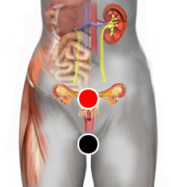

Sangrado vaginal
Par
vagina - útero

Generalidades:
El sangrado vaginal ocurre fuera del periodo de la menstruación, ya sea antes de la menarquia, después de la menopausia, entre un periodo y otro o durante el embarazo. Puede deberse a diversas causas:
Rastrear todos los puntos para encontrar las causas, incluso pares psicoemocionales.